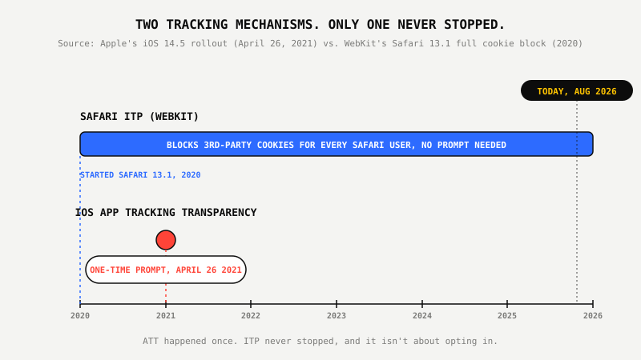
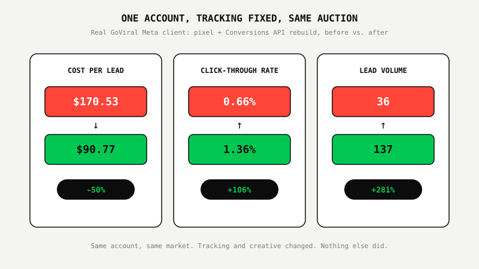

The Real Reason Your Facebook Ads Stopped Working (It's Not iOS)

Key Takeaways
- iOS App Tracking Transparency, the opt-in prompt everyone still blames, launched April 26, 2021. It's a five-year-old, one-time permission screen, not a live explanation for this week's rising cost per lead.
- The tracking gap hitting accounts today mostly comes from Safari's Intelligent Tracking Prevention (ITP), a WebKit browser feature that has fully blocked third-party cookies by default since Safari 13.1 in 2020, on every Safari user, iPhone or Mac, regardless of any ATT prompt.
- Pixel-only tracking has a known fix: an independent server-side Conversions API call, deduplicated against the browser pixel by a shared event ID, so ad blockers and ITP can't quietly erase a real conversion.
- One GoViral client proved it. Rebuilding tracking and creative on a Meta account dropped cost per lead from $170.53 to $90.77, a 50% reduction, while lead volume climbed from 36 to 137, in the same account, same market.
Remember Muting A Smoke Detector Instead Of Checking For Smoke?
The battery gets low, the chirping starts, and most people don't call an electrician. They yank the detector off the ceiling, pull the battery, and go back to whatever they were doing. The chirp is annoying enough to fix. The actual fire risk underneath it usually isn't, until it is.
Meta advertisers have been doing the same thing to iOS for five years. Cost per lead climbs, click-through rate drops, and the explanation on hand is still "Apple broke tracking." It's a satisfying answer. It's also the marketing equivalent of muting the alarm instead of checking what's actually burning.
What iOS App Tracking Transparency Actually Was
It was a single permission screen, and it happened once. Apple introduced App Tracking Transparency with iOS 14.5 on April 26, 2021, requiring every app to ask a user's explicit permission before accessing the device's advertising identifier (IDFA) to track them across other apps and websites. Users who declined stopped sharing that identifier. That's the entire mechanism.
That prompt is now more than five years old. Meta built Aggregated Event Measurement specifically to model conversions for opted-out users, and the industry has had half a decade to adapt campaign structure and measurement around it. A permission screen from April 2021 is not a live explanation for a cost per lead that jumped last month.
Where Today's Tracking Gap Is Actually Coming From
Mostly from a browser feature that has nothing to do with an opt-in prompt. Safari's Intelligent Tracking Prevention (ITP), built into WebKit, has fully blocked third-party cookies by default since Safari 13.1 in 2020, a year before ATT even existed. ITP doesn't check whether a user tapped "Allow" or "Ask App Not to Track." It strips tracking capability from third-party requests for every Safari user, on an iPhone or a Mac, with no prompt involved at all.
Stack ad blockers on top of that, plus a browser pixel that was never paired with a server-side backup, and you get an account that looks like it's losing conversions to "iOS" when it's actually losing them to a WebKit privacy feature that predates the iOS prompt everyone keeps blaming.

The Fix Nobody's Selling You
Pair the browser pixel with an independent server-side Conversions API call, and deduplicate the two by a shared event ID. That's the entire fix, and it's been the standard approach for years now. When the browser pixel gets blocked by ITP or an ad blocker, the server-side event still fires and still gets counted, without double-counting the conversions the pixel does catch.
We cover exactly how this works, and the questions to ask an agency about it, in what actually changed hiring a Meta ads agency in 2026. Most agencies can describe "the iOS problem" in a sales call. Far fewer can describe their own event deduplication setup when asked directly, and that gap tells you which one they've actually built.
What Smart Businesses Do Instead Of Blaming iOS
They audit the tracking setup before they touch the budget. Open Events Manager and check whether server-side events are actually firing, ask whether events are deduplicated by ID, and look at how much of your reported conversion volume is modeled versus observed. None of that requires waiting on Apple to change anything.
One GoViral client had exactly this gap: a Meta account running on browser pixel alone, quietly losing conversions to ITP and ad blockers, with cost per lead climbing and no clear reason why. We rebuilt tracking around browser pixel plus server-side Conversions API, deduplicated by event ID, alongside a real creative testing pipeline (the same system covered in why Meta CPL is rising and how one account cut it anyway). Cost per lead dropped from $170.53 to $90.77, a 50% reduction, click-through rate more than doubled from 0.66% to 1.36%, and lead volume climbed from 36 to 137, in the same account, without waiting on an algorithm change or an iOS update.

Not sure if it's iOS or your tracking setup? We'll show you which, free.
See The $1,000 Meta Growth Proof Program™ ↗